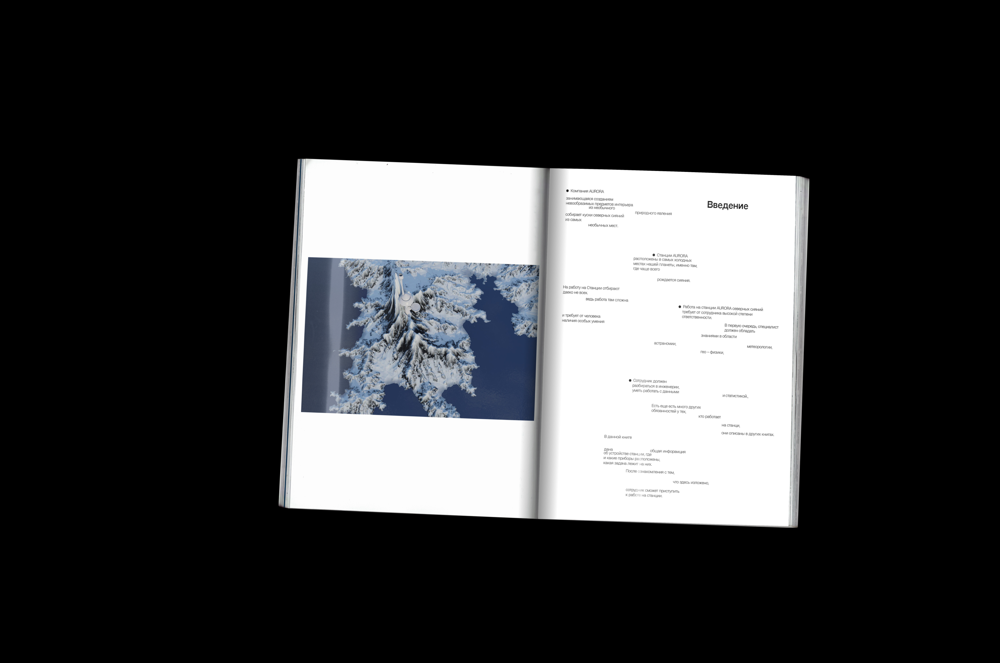
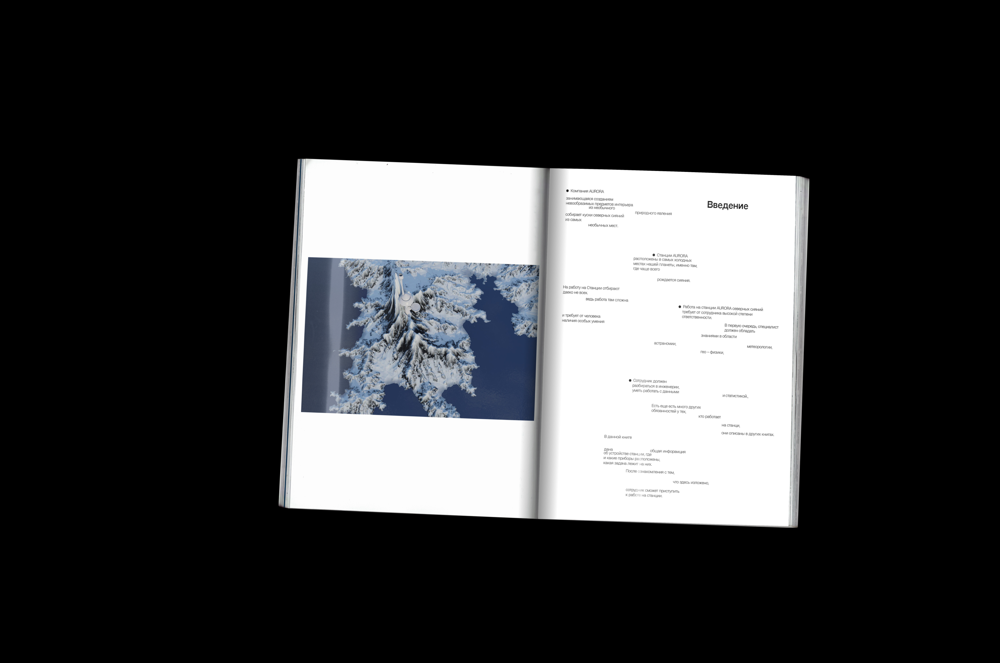

Компания AURORA реализует уникальную концепцию — превращение полярного сияния в физически осязаемый предмет интерьера. Хотя северное сияние (aurora borealis) — это атмосферное явление, мы «перехватываем» его световые характеристики, фиксируя и трансформируя данные в материальные формы. На нашей арктической станции установлены мультиспектральные сенсоры и интерферометры, способные разложить свечение на отдельные длины волн. Основное внимание уделяется диапазону от 557,7 нм до 630,0 нм — характерных зеленых и красных спектров, возникающих при рекомбинации возбуждённых атомов кислорода и азота. Собранные световые сигнатуры проходят цифровую фильтрацию через алгоритмы временного наложения и фазового сглаживания. Это позволяет выделить уникальный «профиль сияния» — динамическую карту его свечения во времени и пространстве. Эти данные далее кодируются в векторные формы и передаются в технологическую лабораторию, где начинается их «материальная интерпретация». С помощью лазерной литографии и фотонной проекции мы создаём уникальные светочувствительные элементы, имитирующие структуру сияния. Каждый элемент проходит через фазовый модулятор, создающий эффект объёмного свечения при малейшем изменении угла обзора. В производстве применяются гибридные материалы: опалесцирующие смолы, фотохромные стекла и наноструктурированные плёнки, способные преломлять свет аналогично ионосферным слоям. Затем световой шаблон проецируется на особую субстанцию — оптический композит с переменной диэлектрической проницаемостью, который «запоминает» профиль свечения и может его воспроизводить при внешнем воздействии (например, от нагрева, ультрафиолета или электромагнитного импульса). Отслеживание полярных сияний начинается задолго до их появления на небосклоне. В основе нашей системы лежит сеть спутниковых обсерваторий и наземных станций раннего предупреждения, распределённых по всему приполярному поясу. Используются данные с геостационарных спутников NOAA и системы DSCOVR, анализирующих параметры солнечного ветра: скорость, плотность и межпланетное магнитное поле (IMF). Когда фиксируется рост активности — особенно вектора Bz, направленного на Землю — запускается протокол Aurora Watch. На Северной станции в это время активируется многодиапазонная система наблюдения, включающая радиоспектрографы, лазерные лидары и алл-сказ камеры (всесферические). Они фиксируют появление первых арок сияния и определяют их параметры: яркость, протяжённость, динамику движения. Когда свечение достигает нужной плотности и стабильности, в дело вступает главная технологическая особенность — фотонный ловец. Это система линз с переменным фокусным расстоянием, оборудованная сверхпроводниковыми сенсорами. Световые потоки направляются внутрь оптической камеры, где проходят через фазовые решётки и фильтры, разделяя сияние на спектральные слои. Каждый "кусок" сияния условно считается световым блоком — зафиксированным по времени, цвету и интенсивности отрезком светового потока. Эти блоки регистрируются как цифровые голограммы высокой плотности с применением гетеродинной интерференции. Далее каждый блок кодируется и присваивается уникальный номер партии. Мы называем это "разделением сияния на фрагменты". После регистрации, каждый световой блок проходит через фазоиндуцированный материал, способный «запоминать» световую характеристику — по сути, фиксировать сияние в веществе. Далее заготовки покрываются слоями кварцевого стекла с антибликовым покрытием, что защищает внутреннюю структуру от рассеивания и сохраняет спектральную чистоту. Формованные изделия (панно, сферы, кубы и другие интерьерные формы) герметизируются в особых капсулах, выполненных из сплава алюминия и стекловолокна, устойчивого к перепадам температур и УФ-излучению. Внутри упаковки поддерживается постоянный уровень влажности и температура, исключающая деградацию фотонного следа. Каждая единица продукции снабжена сертификатом подлинности, в котором указано: координаты съёмки сияния; уровень геомагнитной активности (по шкале Kp); дата и время фиксации; спектральный профиль; краткая научная справка о конкретном типе сияния. Готовая партия отправляется на центральный распределительный узел в Норвегии, откуда по защищённым канальным контейнерам доставляется в бутики и галереи по всему миру — от Токио до Берлина. Для особо редких «ярких блоков» используется вакуумная упаковка и транспортировка в условиях магнитной изоляции, чтобы исключить возможное рассеяние остаточного светового поля. Таким образом, каждый объект, приобретённый в магазине, — это не просто красивая вещь. Это фрагмент живого неба, упакованный по стандартам XXI века и доставленный к вам с научной точностью и философской глубиной. Таким образом, каждый объект от AURORA — это не просто декоративный элемент, а результат научного синтеза и инженерного воображения. Это фрагмент небесного танца, зафиксированный с микроскопической точностью и переведённый в язык формы и света. Мы не просто ловим сияние — мы создаём возможность прикоснуться к нему.